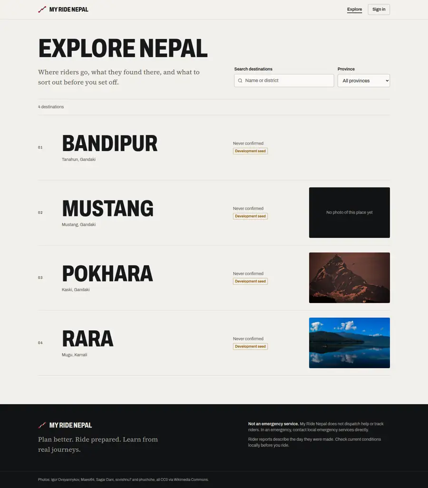
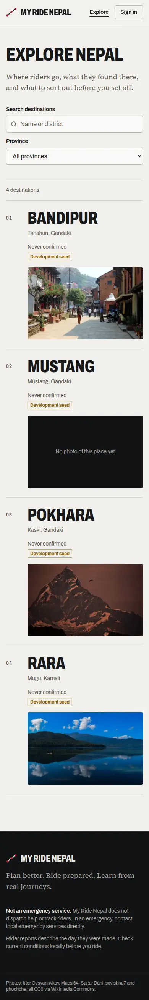
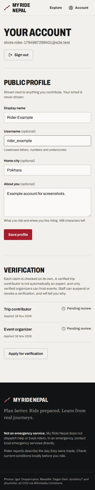
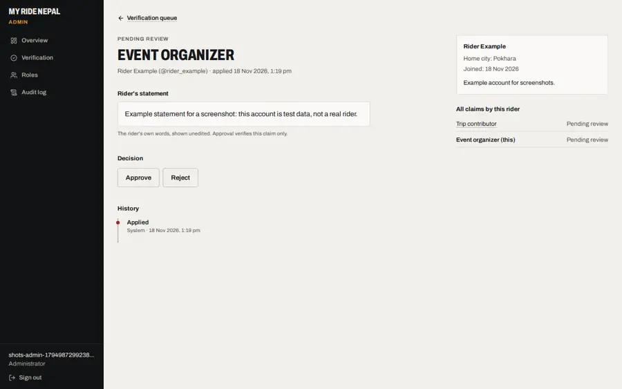
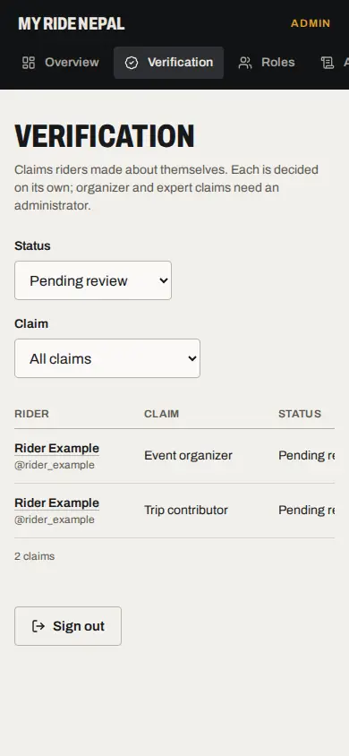
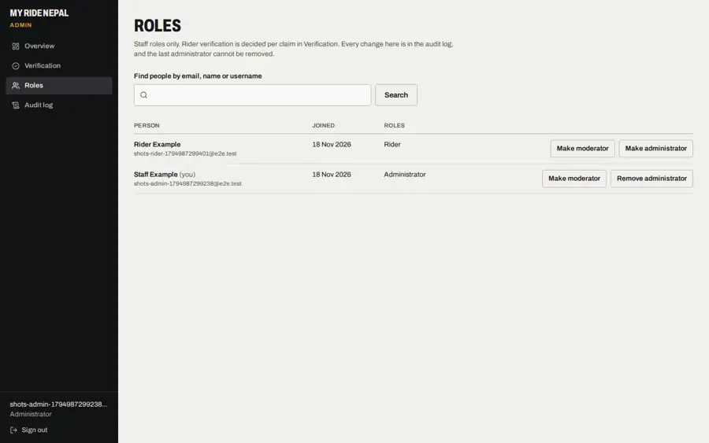
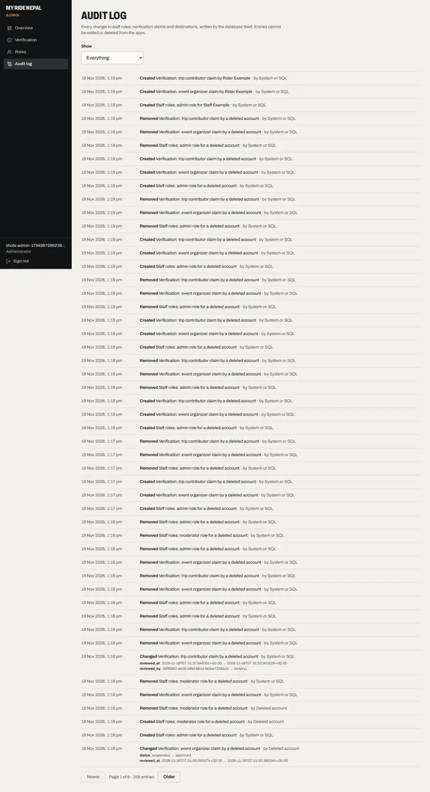

My Ride Nepal · Session report
Session 02: local Supabase, real auth, design refinements, verification workflow
Objective
Apply the owner's four decisions (rename folders, minimal shared package, Supabase CLI + Docker, visual direction with refinements), complete milestone 1.5 (local Supabase, real registration/login/logout/session persistence, protected routes and roles, RLS on real Supabase, CI), then milestone 2 (organizer applications, verification review, approval/rejection, suspension, audit history).
Initial state
End of session 1: two scaffolded apps, two migrations, RLS tests on a stubbed Postgres, no Supabase CLI, auth flows never run. The owner had a dev server running in the old Road-trip-web folder; renaming the folder broke it (restart it from web/).
Decisions
- Shared package
@mrn/sharedlinked withlink:../shared: generated DB types, enum labels, verification rules, date formatting, redirect guard. No UI, no clients. Local git repo without remote; CI expectsRoad-trip-sharedon GitHub. - Supabase CLI pinned as a dev dependency of web (3.2.0). Studio, Realtime, Storage, Edge Runtime and Analytics disabled: the machine has 6.5 GB RAM. Stack: ≈1.4 GB images, ≈170 MB RAM idle.
- Local auth settings: email confirmation on, minimum password 8, secure password change, email rate limit 60/hour (local only).
- RLS suite became one rolled-back transaction, so it runs safely against the local Supabase database as well as a throwaway container.
- @playwright/test pinned to 1.63.0 so the cached browsers are used (no download).
- Verification rules: negative decisions need a new reason of at least 10 characters; riders see the decision and reason but not the reviewer; moderators decide identity and trip contributor, admins also organizer and expert; nobody reviews their own claim; the last admin cannot be removed.
- No video: Commons had no usable Nepal riding footage; a spec for owner footage is in
DESIGN_SYSTEM.md.
Changes made
| Area | What |
|---|---|
| Structure | Renamed folders, root symlinks, shared/ package, typed Supabase clients in both apps |
| Database | config.toml; migration 20261118000003_verification_review.sql; RLS suite rewritten + M2 tests |
| Web | Verification section on Account (claims, statuses, reviewer's note, application form); auth error codes; Explore editorial index; crimson reduced; route line draw-in; header fix; E2E auth.spec.ts, verification.spec.ts |
| Admin | Sidebar nav, verification queue (filters in the URL), claim detail with decision flow and history, roles (search, grant/remove with confirmation), audit log (filter, pages, changed fields), adminOnly guard, StatusLine, ConfirmDialog (native dialog); E2E access.spec.ts, verification.spec.ts |
| CI | .github/workflows/ci.yml in web and admin |
| Docs | New LOCAL_DEVELOPMENT.md; rewritten architecture; updated database, roles, design system, scope, roadmap (verification track), audit checklist, toolkit, progress, handoff, READMEs, CLAUDE.md |
Screenshots







Tests performed (final run)
| Check | Result |
|---|---|
shared: tsc, Vitest | pass, 11/11 |
| web: vue-tsc, oxlint + eslint (no autofix), build | pass |
web: test:db (plain Postgres) and test:db:local (real Supabase) | all assertions pass in both |
| Generated types match the local schema | current |
| web E2E: auth (6 scenarios) + verification application, in Chromium, Firefox, Pixel 7 | 18/18 (and 15/15 twice earlier) |
| admin: types, lint, build, Vitest | pass, 3/3 |
| admin E2E: access (4) + verification/roles/audit (3), in Chromium, Firefox | 14/14 (also 14/14 twice before) |
| Mutation checks: loosened read policy; removed last-admin trigger | suite fails as expected |
| Overflow sweep: web home/explore/destination/account, admin overview/queue/claim/roles/audit at 390 and 1440 | 0 px after fixes |
| WebKit | NOT RUN: missing system libraries (needs sudo) |
| CI on GitHub | NOT RUN: Road-trip-shared repo does not exist yet |
Screen reader, Lighthouse, axe, pnpm audit | NOT RUN (verification track) |
Problems and failed attempts
- Sign-in showed "wrong password" for unconfirmed accounts (all 400s were treated alike). Fixed with Supabase error codes in both apps.
- The suspension-reason rule accepted an old approval note. Caught by the RLS test, fixed before leaving the machine.
- Admin showed the raw role enum ("moderator") styled with CSS; replaced with shared labels.
- Admin layout on phones: page 52 px too wide (nav), an empty stretched header row, then 44 px from a visually hidden table header escaping its scroll container. All fixed and re-measured.
- E2E authoring errors (URL pattern, ambiguous selectors, a sign-out race, a self-calling helper) fixed; suites then passed repeatedly.
- TS2589 "excessively deep" from the generated
Jsontype in templates; replaced with plain object types. - Playwright 1.65 wanted new browsers; WebKit libraries missing; local email limit of 2/hour.
Security considerations
- Only the anon key in
.env.local(git-ignored). E2E never uses the service key: users are created through the public sign-up API and confirmed with localpsql. Both suites refuse to start unless the URL is the local stack. - No remote Supabase project linked or touched.
- New database protections tested: reviewer privacy, required reasons, history access limited to verification records, admin-only user search with literal wildcards, last-admin protection, moderator/admin split, role loss locks a signed-in moderator out on reload.
- Open before launch: CAPTCHA, rate limits on applications, account suspension, authorised security scan.
Next steps
- Owner: create and push
Road-trip-shared, add token secrets if private, run CI; install WebKit dependencies; confirm admin-only organizer decisions. - Verification track: keyboard script, Lighthouse, axe, screen reader, WebKit,
pnpm audit. - M3: routes, segments, checkpoints, services, contributions with moderation, storage and map.